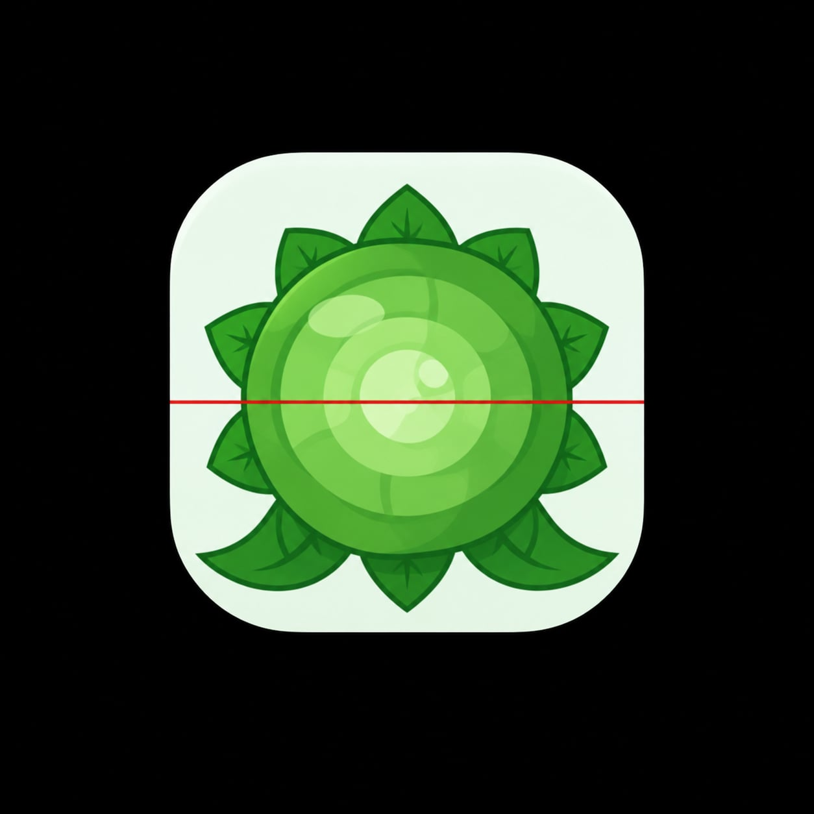
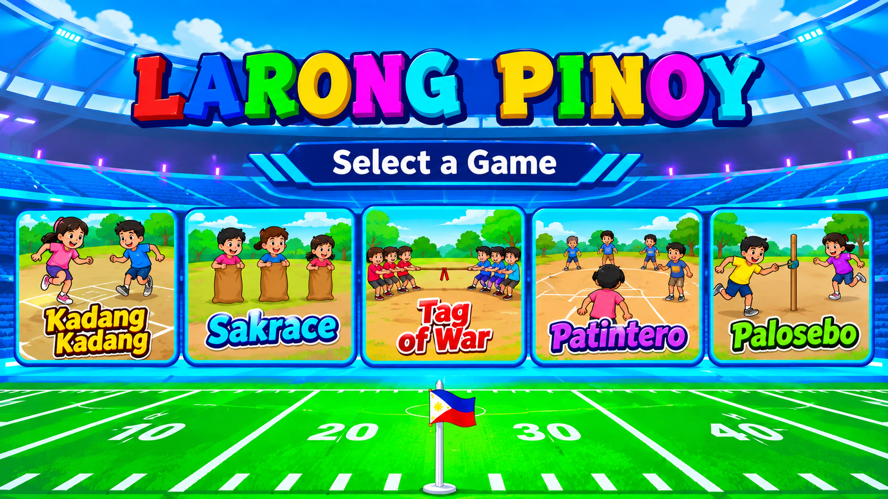
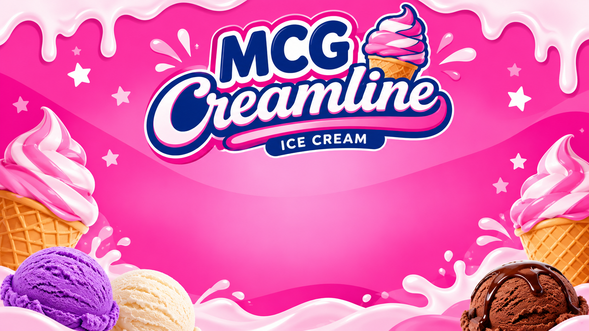
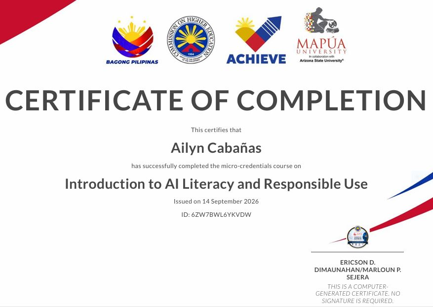
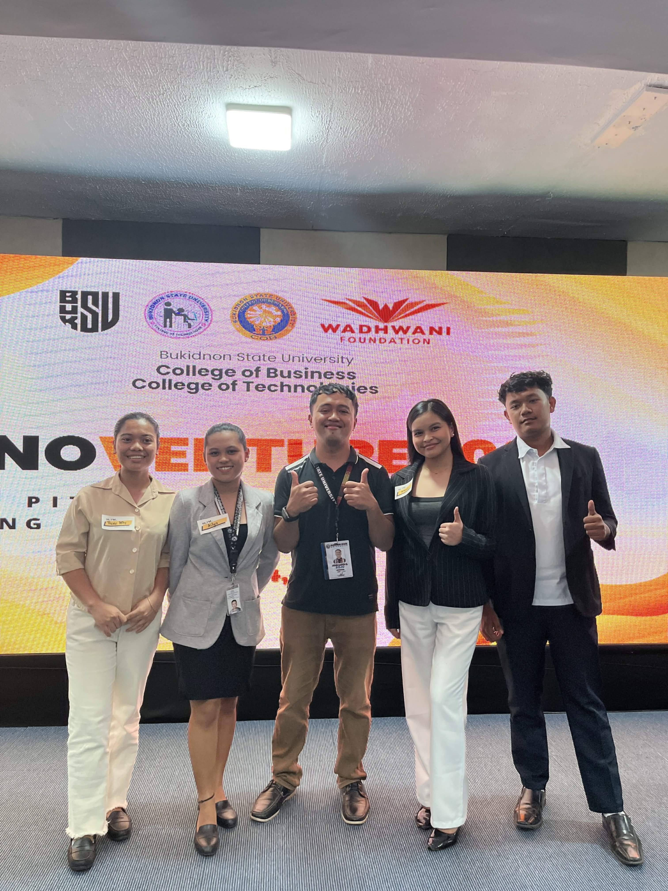
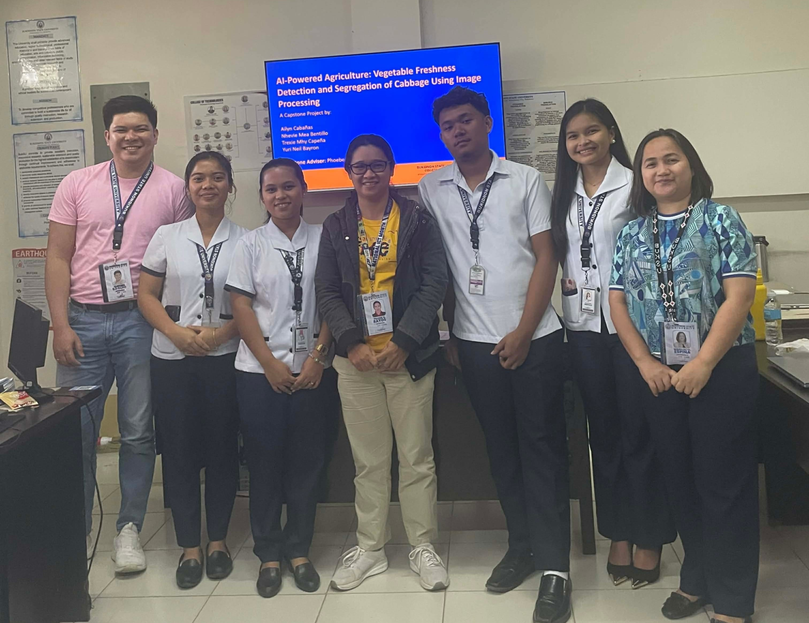

WELCOME TO MY PORTFOLIO
I am a 4th-year Information Technology student at Bukidnon State University. I am passionate about learning new technologies, improving my skills, and gaining practical experience in the IT field.
GET TO KNOW ME
Creating my own path, one step at a time.
I am a Bachelor of Science in Information Technology student at Bukidnon State University. As a student, I enjoy learning about computers, technology, and different areas of Information Technology.
I am willing to learn new things, develop my abilities, and apply my knowledge through real-world experience. I am looking forward to gaining more knowledge and improving my skills during my internship.
WHAT I CAN DO
MY SCHOOL WORK

A mobile-based system that uses the YOLOv8 model to detect whether cabbage is Fresh or Spoiled through image processing. It also estimates the remaining shelf life based on the cabbage's weight.

Larong Pinoy is a web-based multiplayer game featuring five traditional Filipino games: Kadang-Kadang, Sack Race, Tug of War, Patintero, and Palosebo. It allows players to play together online while promoting teamwork, fun, and Filipino culture.

An online ice cream shop website where customers can browse available ice cream products, choose their favorites, and place orders online.
MY EXPERIENCES
CERTIFICATE OF COMPLETION

Team Leader – Aurynex

Served as a Research Leader

LET'S CONNECT
I am open to internship opportunities and learning experiences. Feel free to contact me through my email address.
acyhang13@gmail.com
Bukidnon State University
Thank you for visiting my portfolio!
♡